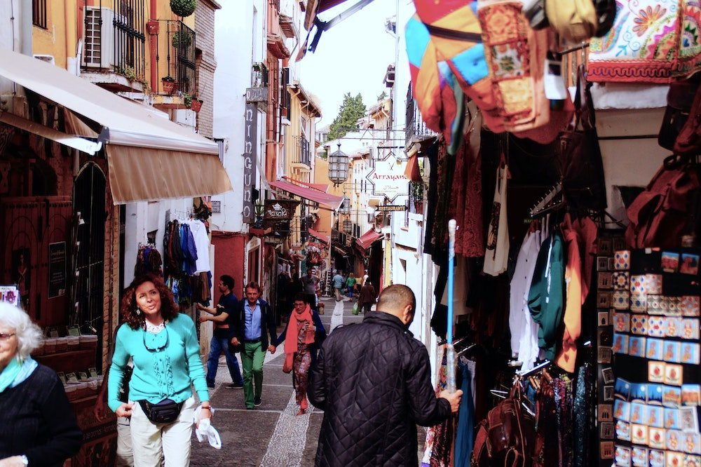

현재와 중세, 아랍과 유럽이 공존하는 도시,
그라나다
그라나다
스페인 그라나다 하면 가장 먼저 떠오르는 것이 알함브라 궁전이다. 스페인 여행의 필수코스 같은 곳이다. 스페인 남부 안달루시아의 지중해 연안과 가까운 곳에 위치한 알함브라 궁전을 보기위해 일년이면 약 7천만명 가량의 여행객들이 그라나다를 찾는다고 한다.
인구 25만가량의 작고 아담한 소도시가 전 세계에서 관광객들이 찾아오는 것을 보면 황금 알을 낳는 관광지가 돼 있다고 할 수 있다. 이슬람 문명이 낳은 유산이 스페인을 먹여 살리고 있어 역사의 아이러니를 느끼게 한다. 그렇게 보면 스페인 사람들은 이슬람인들이 남긴 유산의 가장 많은 혜택을 보고 있는 셈이다.
8세기 무렵 북아프리카에서 지중해 지브롤터 해협을 건너온 이슬람 세력은 그라나다를 비롯 안달루시아 지역을 장악하고 스페인 전 영토를 차지했는데, 그라나다는 1492년 다시 쫒겨 날 때까지 최후의 보루 역할을 했던 곳이다. 비록 쫓겨나기는 했지만 무척 오랜 기간 이슬람의 역사와 문화가 베어있는 곳이라 할 수 있다.